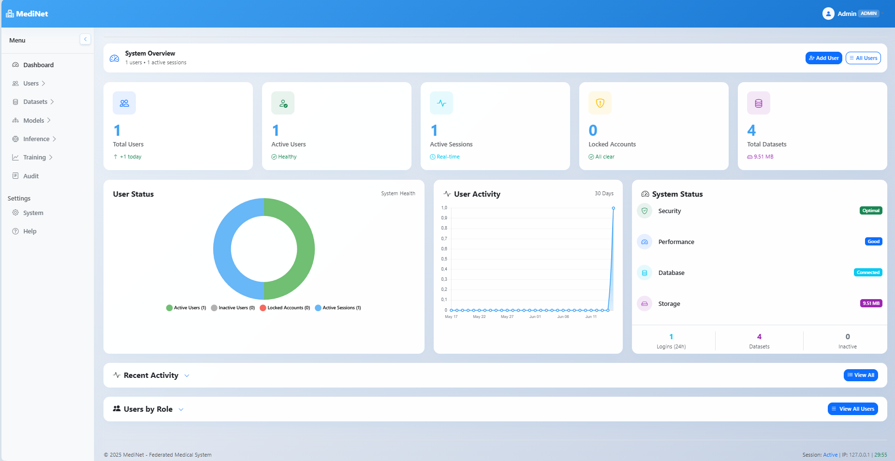
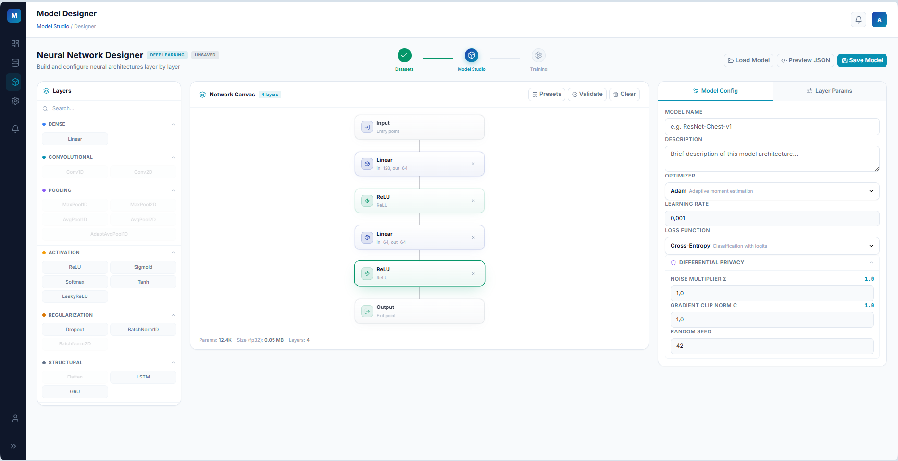
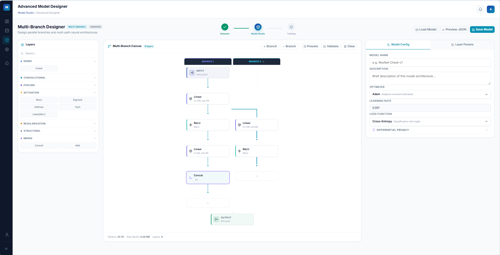
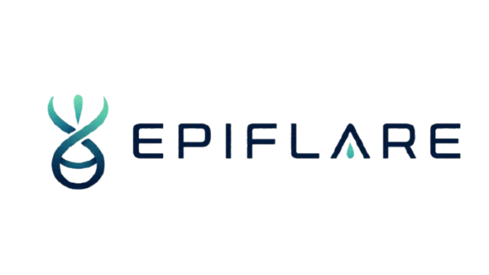
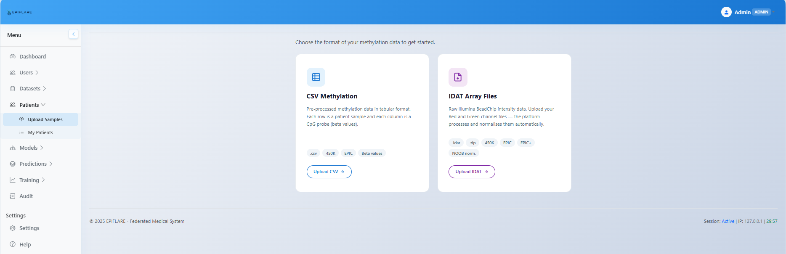
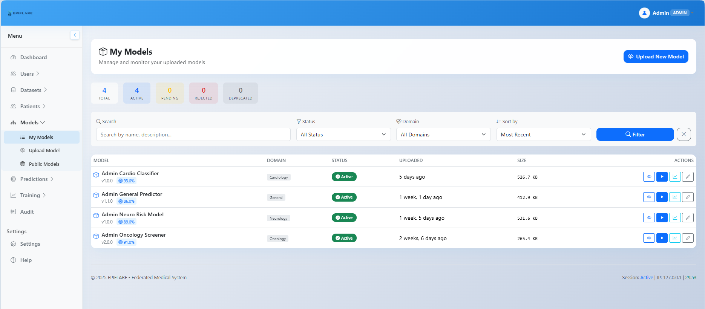
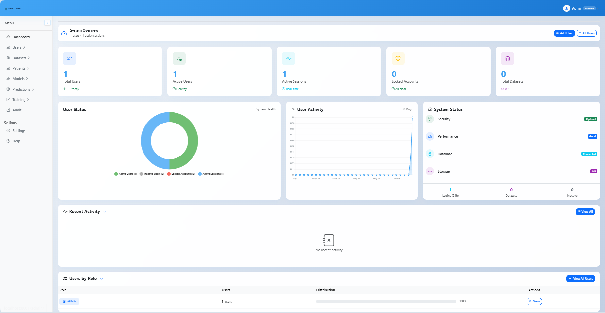
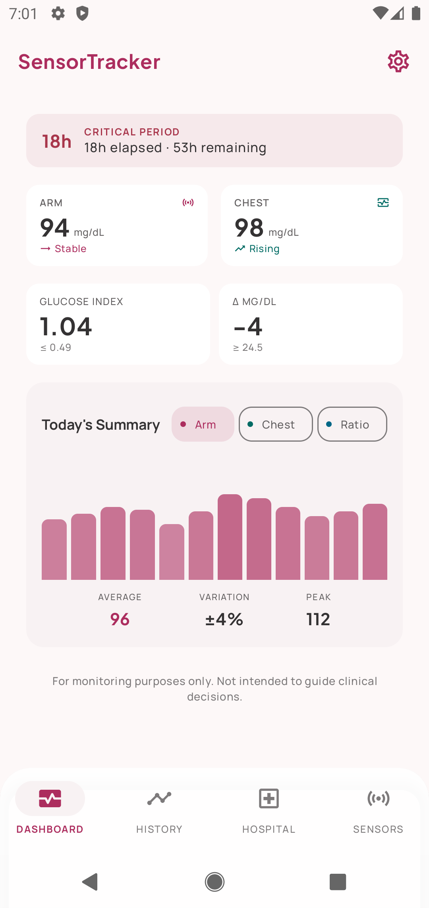

Hypotheses
Research Objectives
The Problem
Clinical data cannot be centralised — GDPR, patient confidentiality and hospital regulations prevent pooling data across institutions.
The Solution: Federated Learning
Bring the model to the data, not data to the model. Each hospital trains locally and shares only model parameters — never patient data.
Visual Model Builder — design layers without code

Role system:
Differential Privacy — each round is safe
Gaussian noise added to gradients. One round gives an adversary no useful information — privacy is mathematically guaranteed.
But privacy cost ε accumulates over rounds
Each participation costs ε privacy units. Run 100 rounds, 1000 rounds… the accumulated cost Σεᵢ grows without bound.
Model inversion becomes feasible
A determined adversary accumulating enough gradient updates can reconstruct patient-level data. The "safe per round" guarantee no longer holds globally.


Model deployment → privacy configuration
Client status in a round:
A solid platform enables building specialised applications
Specialised for geneticists working with epigenomics data

Use case: Epigenomics
A geneticist has a model trained on DNA methylation data (EPIC arrays) and wants to apply it to new patients — without sending data outside the institution.
New role: Geneticist
Uploads patient methylation data (CSV), loads ONNX models, and gets semantic per-patient predictions — all within the institution.
| Sample (Patient) | CpGs processed | Prediction | Confidence |
|---|---|---|---|
| GSM001_sample | 850,000 | Healthy | 0.94 |
| GSM002_sample | 850,000 | At Risk | 0.87 |
| GSM003_sample | 850,000 | Healthy | 0.91 |
| GSM004_sample | 850,000 | At Risk | 0.76 |
Instead of raw "0" or "1", the geneticist sees meaningful labels. Communicating results clearly is as important as the result itself.



Completed (v0.2)
Next steps
Upload model
ONNX format
+ CpG feature list
Upload patient data
CSV — samples × CpGs
(EPIC array, 850 K CpGs)
Auto CpG matching
Software finds the model's
CpGs in each patient · auto
Per-patient prediction
Semantic labels
+ confidence score
A second research line — built on the same platform
Growing evidence that glycaemic variability — patterns over time, not just point values — may be a relevant biomarker in breast cancer progression.
We are building an app that captures continuous glucose data from patients using consumer CGM sensors — accessible, low-cost, in their everyday context.
Data we want to capture
Completed
Next steps

Current situation
Built for future clinical use